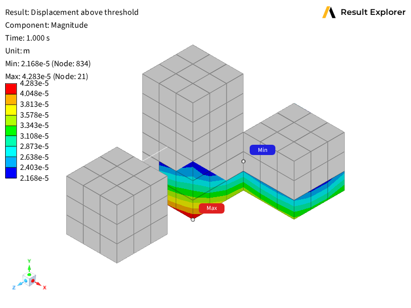

Note
Go to the end to download the full example code.
Create a user-defined plot with DPF filtering#
This example demonstrates how to create a user-defined plot that displays only the nodes whose total displacement magnitude exceeds a percentage of the maximum displacement in the model:
Server-side DPF scripting to define custom plot data computation.
User-defined plots with configurable custom options for filtering.
Threshold filtering using DPF operators to filter by displacement magnitude.
Viewport visualization of user-defined plot results with display options.
The example creates a user-defined plot that uses a DPF high_pass operator
to filter out nodes whose displacement magnitude falls below the threshold,
showing only regions that meet or exceed the specified percentage of the
maximum displacement.
Import the Result Explorer dependencies.
from ansys.result_explorer.core import launch_result_explorer
from ansys.result_explorer.core.examples import (
ExampleKeys,
get_example_file,
get_example_snapshot_settings,
)
from ansys.result_explorer.core.objects.plot_definition import (
PlotDefinition,
ResultType,
ShellPosition,
)
Define the DPF server-side script#
This script is executed server-side by Result Explorer to compute the plot
data. It extracts displacement, computes the per-node displacement magnitude
(L2 norm of X/Y/Z components), determines the maximum magnitude across all
nodes, then applies a DPF high_pass operator to retain only the nodes
where the magnitude exceeds percent_threshold percent of that maximum.
ABOVE_THRESHOLD_SCRIPT = """\
from ansys.dpf import core as dpf
from ansys.result_explorer.server.logger import log
from ansys.result_explorer.server.simulation import SimulationInterface
from ansys.result_explorer.server.plots import PlotDefinition
from ansys.result_explorer.server.simulation.plot_helper import scoping_definition_to_dpf_scoping
from ansys.result_explorer.server.utils import AnnotatedField, UserDefinedContext
from ansys.result_explorer.server.schemas import CustomOptionDefinition
def get_custom_options(
simulation: SimulationInterface,
context: UserDefinedContext,
) -> list[CustomOptionDefinition]:
return [
CustomOptionDefinition(
label="Percent Threshold",
type="float",
required=False,
min=0.0,
max=100.0,
default_value=85.0,
)
]
def get_custom_plot_data(
simulation: SimulationInterface,
definition: PlotDefinition,
context: UserDefinedContext,
) -> list[AnnotatedField]:
model = simulation.dpf_model
server = simulation.server
mesh = model.metadata.meshed_region
percent_threshold = float(definition.custom_options.get("Percent Threshold", 50.0))
# Time scoping
tf = model.metadata.time_freq_support
if definition.all_sets:
timeids = range(1, tf.n_sets + 1)
elif definition.last_set:
timeids = tf.n_sets
else:
timeids = definition.set_ids
# Mesh scoping
scoping = scoping_definition_to_dpf_scoping(definition.mesh_scoping, context.mesh_info)
# Extract displacement
disp_op = model.results.displacement()
disp_op.inputs.time_scoping(timeids)
if scoping is not None:
if scoping.location == dpf.locations.elemental:
# Turn elemental scoping into nodal before feeding into displacement op
transpose_op = dpf.operators.scoping.transpose(
server=server,
mesh_scoping=scoping,
meshed_region=mesh,
)
node_scoping = transpose_op.outputs.mesh_scoping_as_scoping()
disp_op.inputs.mesh_scoping(node_scoping)
else:
disp_op.inputs.mesh_scoping(scoping)
fc_disp = disp_op.outputs.fields_container()
time_frequencies = fc_disp.time_freq_support.time_frequencies
annotated_fields = []
# extract scoped mesh for visualization purposes (if scoping is provided)
scoped_mesh = mesh
if scoping is not None:
extract_mesh_op = dpf.operators.mesh.from_scoping(
server=server,
inclusive=1,
mesh=mesh,
scoping=scoping,
)
scoped_mesh = extract_mesh_op.outputs.mesh()
for index, set_id in enumerate(fc_disp.get_time_scoping().ids):
disp_field = fc_disp[index]
# Compute per-node displacement magnitude (L2 norm of X, Y, Z)
norm_op = dpf.operators.math.norm(field=disp_field, server=server)
norm_field = norm_op.outputs.field()
# Derive the absolute threshold from the percent of the set's maximum magnitude
min_max_op = dpf.operators.min_max.min_max(field=norm_field, server=server)
max_val = min_max_op.outputs.field_max().data[0]
threshold = float(max_val * percent_threshold / 100.0)
log.info(
f"Above-threshold plot '{definition.name}': "
f"set={set_id}, max={max_val:.4e}, "
f"percent={percent_threshold}%, threshold={threshold:.4e}"
)
# Keep only nodes where displacement magnitude >= threshold
hp_op = dpf.operators.filter.field_high_pass(
server=server,
field=norm_field,
threshold=threshold,
)
above_threshold_scoping = hp_op.outputs.field().scoping
# Rescope the displacement field to the nodes above the threshold
rescope_op = dpf.operators.scoping.rescope(
server=server,
fields=disp_field,
mesh_scoping=above_threshold_scoping,
)
filtered_disp = rescope_op.outputs.fields_as_field()
# Build a sub-mesh limited to the above-threshold region for correct visualization
# if len(above_threshold_scoping.ids) > 0:
# extract_mesh_op = dpf.operators.mesh.from_scoping(
# server=server,
# inclusive=1,
# mesh=disp_field.meshed_region,
# scoping=above_threshold_scoping,
# )
# filtered_disp.meshed_region = extract_mesh_op.outputs.mesh()
filtered_disp.meshed_region = scoped_mesh
simulation_time = time_frequencies.data[set_id - 1]
annotated_fields.append(
AnnotatedField(
field=filtered_disp,
name=f"displacement_above_threshold;{set_id}",
display_name="Displacement Above Threshold",
set_id=set_id,
time_freq=simulation_time,
time_freq_unit=simulation.time_freq_support.time_frequencies.unit,
)
)
return annotated_fields
"""
Launch Result Explorer#
Start a Result Explorer instance for this example.
rx = launch_result_explorer()
Create workspace and solution#
Create a workspace and load a solution from the example data.
rst_path = get_example_file(ExampleKeys.RST_MULTIPLE_CONNECTIONS)
workspace = rx.create_workspace(name="PyRX Above Threshold Workspace")
sol = rx.create_solution(
name="PyRX Above Threshold Solution",
file_path=rst_path,
)
print(f"Created solution: {sol.name}")
Created solution: PyRX Above Threshold Solution
Create the user-defined plot#
Create a user-defined plot using the DPF script with configurable threshold filtering.
ud_plot = sol.create_plot(
PlotDefinition(
result_type=ResultType.user_defined,
location="unused",
name="Displacement Above Threshold",
on_skin=False,
all_sets=False,
last_set=True,
shell_position=ShellPosition.top,
script=ABOVE_THRESHOLD_SCRIPT,
custom_options={"Percent Threshold": 50.5},
)
)
print(f"Created user-defined above-threshold plot: '{ud_plot.name}'")
Created user-defined above-threshold plot: 'Displacement Above Threshold'
Assign to viewport and configure display#
Assign the user-defined plot to a viewport and configure display options.
viewport = workspace.assign_view(view=ud_plot, wait=True)
with viewport.update_display_options() as opts:
opts.show_mesh_edges = True
opts.show_min_max_labels = True
viewport.save_snapshot(
file_path="013-user-defined-plot.png", settings=get_example_snapshot_settings()
)
rx.stop()

Total running time of the script: (0 minutes 20.304 seconds)